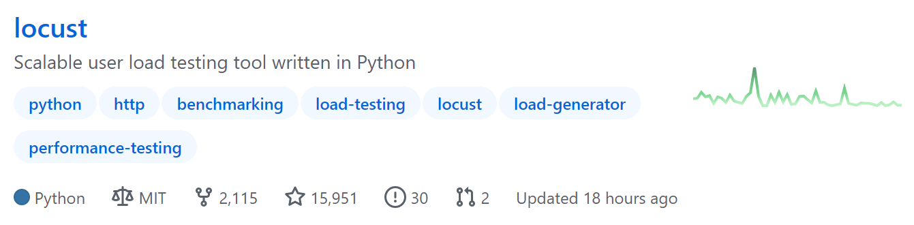
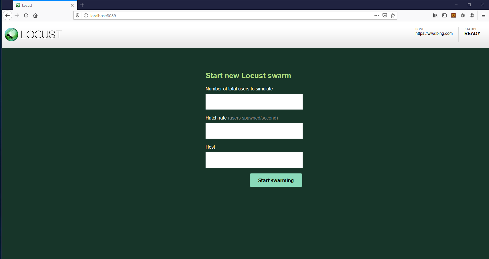

1 Python技术栈性能测试工具Locust入门¶

Locust是一款Python技术栈的开源的性能测试工具。Locust直译为蝗虫，寓意着它能产生蝗虫般成千上万的并发用户：
Locust并不小众，从它Github的Star数量就可见一斑：

截止文章写作时，一共15951Star。
Locust生态良好，它已在多家外企（包括世界500强）投入使用：
如此看来，Locust是非常值得学习和掌握的一款工具。
Python的魔力在于化繁为简，基于Python的Locust也能给仍然困惑于性能测试的我们带来启发。
Locust特点¶
以纯Python方式编写用户脚本，提供极大自由度。
用户脚本可以串行方式编写，Locust会通过轻量级进程/协程产生并发，无需自己做并发编程。
并发量大，借助于gevent库，Locust能产生成千上万并发请求。
开销小，Locust用户运行时开销很小。
良好的Web UI对性能结果实时监测。
能测任何系统任何协议，只需要写个client即可。
开放REST API，尽情发挥。
安装Locust¶
需要Python版本3.6及以上。
执行pip命令：
$ pip install locust
验证安装成功：
$ locust -V
安装时会一并安装依赖库：
Installing collected packages: Werkzeug, pywin32, zope.event, greenlet, gevent, geventhttpclient, itsdangerous, flask, Flask-BasicAuth, ConfigArgParse, pyzmq, psutil, locust
能看出来flask为Locust提供了Web功能。
快速上手¶
使用Locust一般按照以下步骤进行：
编写Python用户脚本。
使用
locust命令执行性能测试。（可选）通过Web界面监测结果。
示例代码如下，新建locustfile.py文件：
import time
from locust import HttpUser, task, between
class QuickstartUser(HttpUser):
wait_time = between(1, 2.5)
@task
def hello_world(self):
self.client.get("/hello")
self.client.get("/world")
@task(3)
def view_items(self):
for item_id in range(10):
self.client.get(f"/item?id={item_id}", name="/item")
time.sleep(1)
def on_start(self):
self.client.post("/login", json={"username":"foo", "password":"bar"})
路径切换到locustfile.py文件所在目录，执行命令：
$ locust
也可以通过
-f指定某个目录文件：$ locust -f locust_files/my_locust_file.py
运行后，打开http://127.0.0.1:8089看到Web界面：

填写信息后，就能开始压测了。Web界面提供了结果统计数据：

和性能指标走势图：

脚本解析¶
示例脚本解析如下：
## Locust用户脚本就是Python模块
import time
from locust import HttpUser, task, between
## 类继承自HttpUser
class QuickstartUser(HttpUser):
# 每个模拟用户等待1~2.5秒
wait_time = between(1, 2.5)
# 被@task装饰的才会并发执行
@task
def hello_world(self):
# client属性是HttpSession实例，用来发送HTTP请求
self.client.get("/hello")
self.client.get("/world")
# 每个类只会有一个task被选中执行
# 3代表weight权重
# 权重越大越容易被选中执行
# view_items比hello_wolrd多3倍概率被选中执行
@task(3)
def view_items(self):
for item_id in range(10):
# name参数作用是把统计结果按同一名称进行分组
# 这里防止URL参数不同会产生10个不同记录不便于观察
# 把10个汇总成1个"/item"记录
self.client.get(f"/item?id={item_id}", name="/item")
time.sleep(1)
# 每个模拟用户开始运行时都会执行
def on_start(self):
self.client.post("/login", json={"username":"foo", "password":"bar"})
小结¶
本文先了解了Locust的背景和生态，它是值得学习的，对于Python技术栈来说更加如此。接着介绍了使用pip命令安装Locust，其中发现顺带安装了flask，Locust的Web功能是flask提供的。然后给出了一段示例代码，按照步骤上手Locust。最后对示例代码进行了解析，浅尝辄止。locustfile实际上该怎么写呢？